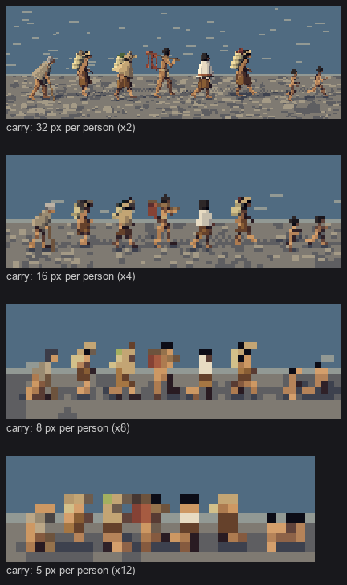
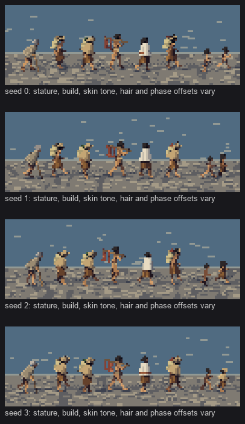
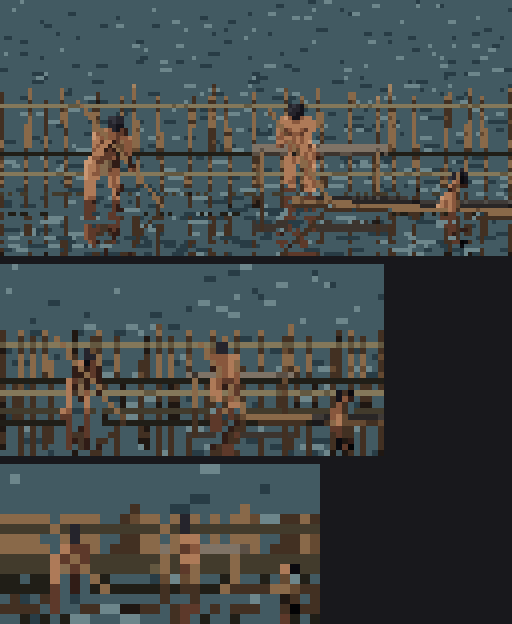
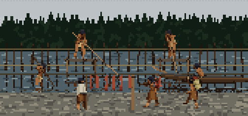
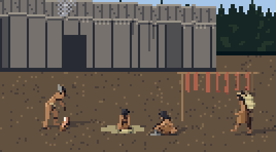
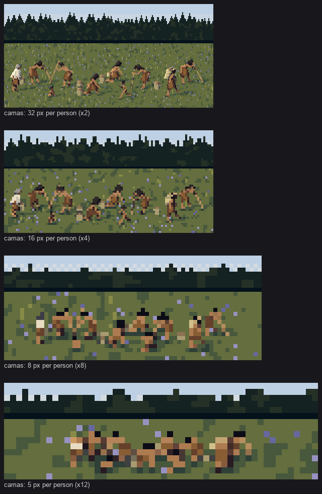
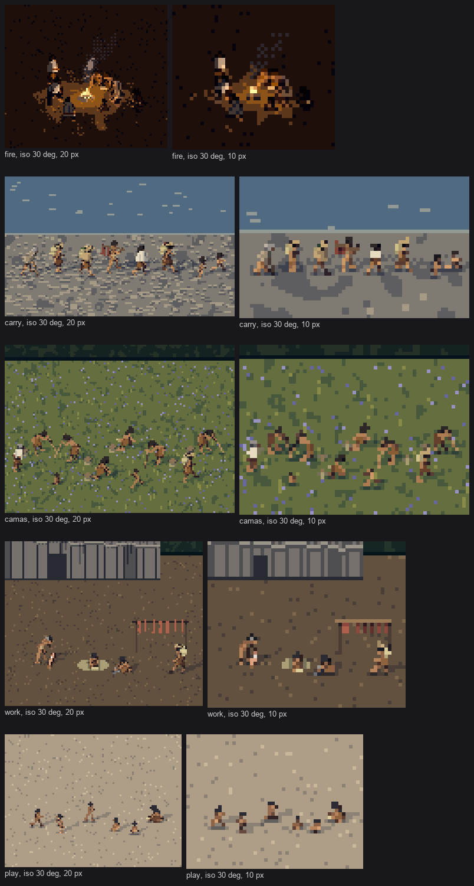
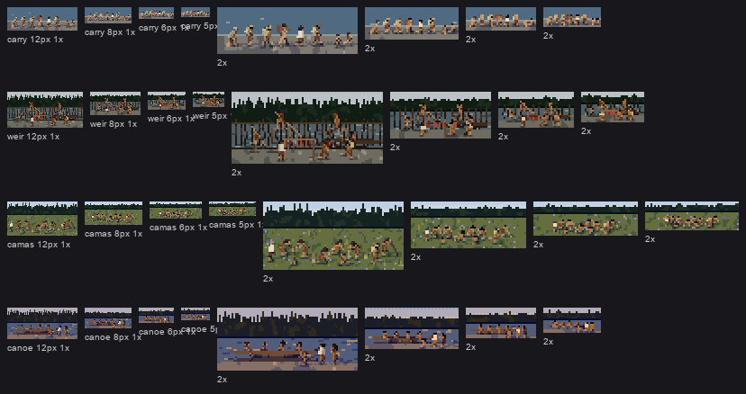

7. Groups in their settings
Back to the tutorial. Code: scenes.py (seven scenes, backdrops, the plank house), setting.py (hearth, canoe, weir, platform, rack, baskets, mats), water.py (the mirror), grounds.py (calm grounds), sheets.py (sheets E–H), in ~/work/pixelart-studies/elements/people/src/.
The brief asked for "group compositions (around a fire, at a fish weir, carrying) at several distances". Groups are where the small-size rules earn their keep, and where settings start competing with people for attention.
A scene is a function of size
Each scene is laid out in world units, one unit being an adult's height (1.65 m, from Eells' measurements). It's rendered by a single call at any number of pixels per person, at the landscape view (10–14°) or the iso view (30°):
def scene_carry(size_px=24, elev=12, hour='morning', phase=0.0, seed=0, sun=None):
"""A file of people going along the beach: women with loaded baskets on tumplines, a man with
salmon, a woman in a rain cape, a child running ahead, an elder with a staff."""
sc = _scene(size_px, 6.5, 2.2, elev, 1.75) # canvas 6.5 x 2.2 units, ground line at 1.75
file_ = [(-2.6, 0.2, dict(activity='staff', sex='m', age='elder', dress='coast_m_fur')),
(-1.8, 0.1, dict(activity='carry', sex='f', load='ROOT')),
(-1.0, 0.25, dict(activity='carry', sex='f', dress='coast_f_rain', load='LEAF')),
(-0.2, 0.05, dict(activity='carry_load', sex='m')),
(0.6, 0.2, dict(activity='walk', sex='f', dress='coast_f_wool')),
(1.3, 0.1, dict(activity='carry', sex='f', load='FISH')),
(2.3, 0.3, dict(activity='run', age='child', sex='m')),
(2.8, 0.0, dict(activity='run', age='child', sex='f'))]
for i, (x, z, sp) in enumerate(file_):
sc.add_person(dict(sp, x=x, z=z, facing=0, phase=(phase + i * 0.29) % 1, seed=seed + i))
...
Everyone's phase is offset (i × 0.29), so the file doesn't march in step. The seed varies stature, build, skin tone and hair per person, and in the carry scene also varies which of the guide's women's outfits each woman wears.
A steeper camera sees more ground, so _scene grows the canvas and lowers the ground line by how much the elevation's sine exceeds 12°'s. Without that, the 30° view cropped off the people.

study. The carrying file at 32, 16, 8 and 5 px per person. The critic's favourite: "a household on the move at 32, 16 and 8 px, and still as people at 5 px".

study. Sheet E: the same file under four seeds.
Calm grounds
The Bruegel reduction's third rule (how-to 1) applies to every ground: the figure must be the loudest thing near it. My grounds are deliberately quieter than the ground students' full painters. In a real scene their painters would supply the ground and mine would only supply the contact and cast shadows.
- Low-contrast ramps by construction. Sand runs only
#6e5e48 → #a89274 → #ccb894. - Marks in 2–5% of pixels.
- Gravel stones: mostly the middle step, lit on top and dark underneath only when they're big enough to have a top.
- Fewer marks far away. Below 12 px per person the ground's marks thin out, so a 5 px person isn't competing with a pebble.
far = float(np.clip((12 - scale) / 7, 0, 1))
n = int(h * w / max(2.0, (0.06 * scale) ** 2) * 0.3 * (1 - 0.8 * far)) # gravel stones
Water is an exact mirror
Every pixel of every figure and prop has a world position (from the z-buffer; how-to 6). So a reflection is exact: reflect each point about the water plane and project it again. Following the studio's measured rules:
- Lights drop two steps and darks one: a compressed range.
- Some rows break: dash rows.
- Anything below the plane is hidden. A spear fisher standing in the river loses his shins to the water, and the paddlers sit inside the hull.
yr = 2 * wl - P[:, 1] # the mirrored height
su = yr * ce - P[:, 2] * se
ry = np.rint(sc.oy - su * sc.scale - 0.5).astype(int) # its screen row
st = np.clip(src % 8 - drop, 0, 4)
st = np.where(src % 8 >= 3, st - 1, st) # lights drop more than darks
rowbreak = rng.random(H) < dash # dash rows
keep = ~rowbreak[ry] | (rng.random(len(ry)) < 0.35)

fig. Four paddlers bringing a canoe in at golden hour, 32 px; people waiting on the gravel.
The canoe is a dugout: a spindle kept only below the gunwale plane, a darker interior lying flat at the gunwale, and a raised prow. Paddlers are placed at the hull's floor (y=0.1), and people on platforms or in canoes cast no shadow on the ground.
Props need their own level of detail
The first weir had 30 stakes and three lattice rails. At 8 px per person it was a fence as loud as the fishermen, then a basket-weave:

nb037. The first weir at 32, 16 and 8 px.
The rule that fixed it:
- Stakes are never closer than ~3 px on screen, and are dark and wet (two steps down).
- Rails drop out: the lower one below 20 px, the top one below 10.
n = int(min(n, (x1 - x0) * size_px / 3.2 + 1))
...
rails = (water + 0.12, h - 0.1) if size_px >= 20 else ((h - 0.1,) if size_px >= 10 else ())

fig. The weir at 24 px, overcast: dip-netters on platforms, a spear fisher in the shallows, a paddler, women carrying salmon up to the rack, a woman in a blanket.
The same thinking went into the rest of the scenery:
- Rack salmon are muted toward the red-brown of curing fish, not bright flesh.
- The plank house has planks of varied width (split from living trees, 0.2–0.45 units) in silver-grey, water streaks from the eaves, a sun-bleached band at the top, and smoke seeping from a propped roof plank rather than a chimney. Its door is dark plank, not black. From a steeper camera it gets a roof band. All of this is from the naturalist's guide 03 ("at 10 m").

fig. Village work at 24 px: a man splitting cedar, a woman weaving on a mat, another pounding, salmon on the rack, a woman passing with a basket, the house behind.
Spacing a crowd at distance
At real spacing, about a metre apart, six bent camas diggers overlap on screen at 5 px per person and merge into a brown band, seams or no seams:

nb105. Camas diggers at 32, 16, 8 and 5 px, at their real spacing.
I spread them out below 10 px, by up to 60%:
spread = 1 + 0.6 * max(0.0, (10 - size_px) / 5) # far away, people need a pixel of ground between

study. The same after spreading. Better, not solved.
That's the painter cheating for the sim. The honest version is a sim decision: how many people are drawn at 5 px per person, and how they're spaced. The naturalist's distance ladder says that at 1 km "people are invisible; their smoke, canoes and cleared ground are what you paint", so a crowd's far read might not be people at all.
The iso view

study. Five groups at the 30° iso view, at 20 and 10 px per person.
Standing and walking figures hold up from above. Bent figures, which were designed side-on, foreshorten into blobs more often than they should. The fire circle reads best from above, because the ring of people around the pool is the composition.
At true size

study. Sheet H: the carrying file, the weir, the camas and the canoe at 12, 8, 6 and 5 px, at 1× and 2×.
This is the test for everything above. At 5–6 px the carrying file is a row of clean dots, a dark head and one body colour each, and the canoe is a dark sliver with paddlers as nicks along the gunwale. Both are the naturalist's 100 m sentence.
Where it falls short
- The backdrops are placeholders. The forest wall is a row of spires, the far shore is a ruled line, and the sky is five flat bands. They belong to the conifers, water and sky students; use theirs.
- The settings are sketches. The weir, rack, hearth, canoe and plank house are enough to say what the people are doing, and no more.
- Iso foreshortening of bent figures.
- Crowd density at distance needs a sim decision.